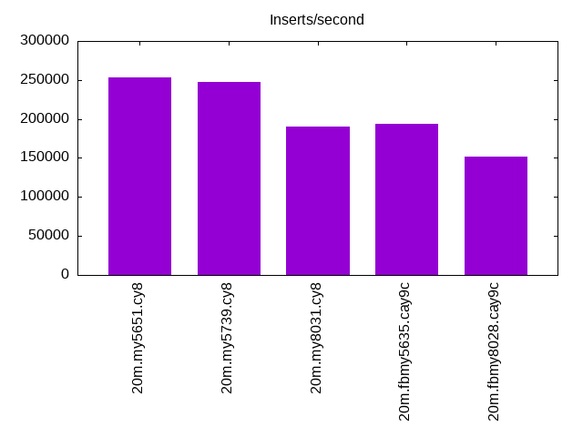
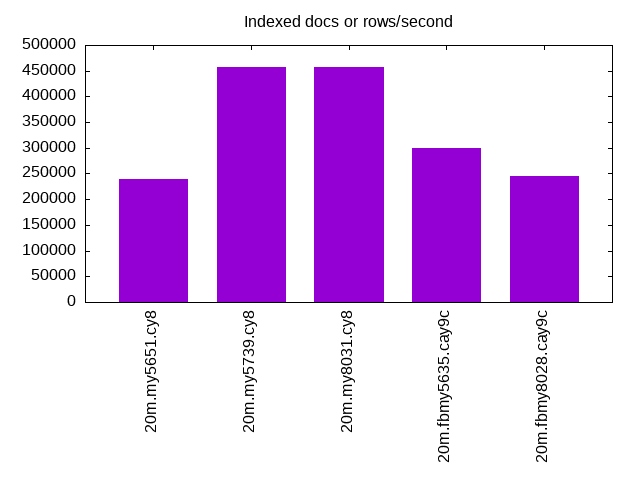
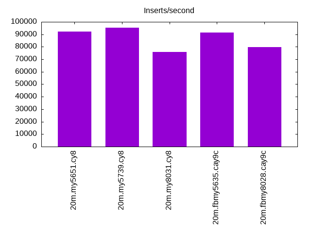
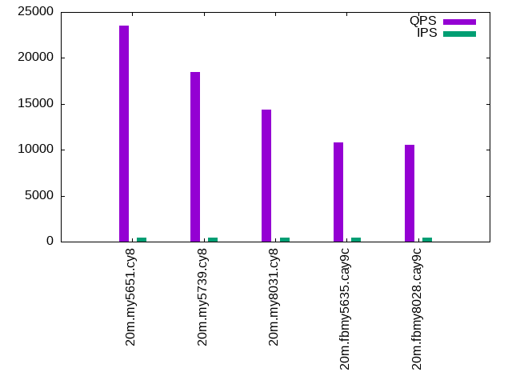
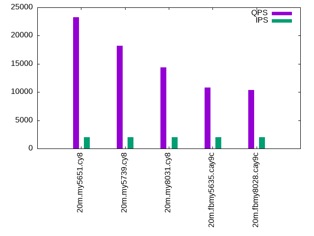
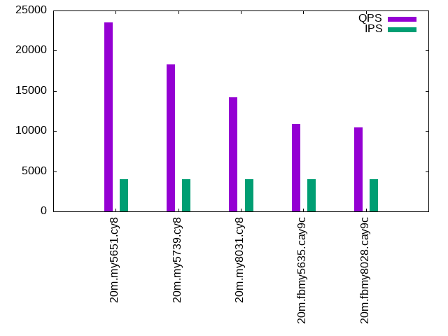

This is a report for the insert benchmark with 20M docs and 4 client(s). It is generated by scripts (bash, awk, sed) and Tufte might not be impressed. An overview of the insert benchmark is here and a short update is here. Below, by DBMS, I mean DBMS+version.config. An example is my8020.c10b40 where my means MySQL, 8020 is version 8.0.20 and c10b40 is the name for the configuration file.
The test server has 8 AMD cores, 16G RAM and an NVMe SSD. It is described here. The benchmark was run with 4 clients and there were 1 or 2 connections per client (1 for queries, 1 for inserts). The benchmark loads 20M rows without secondary indexes, creates secondary indexes, loads another 20M rows then does 3 read+write tests for one hour each that do queries as fast as possible with 100, 500 and then 1000 writes/second/client concurrent with the queries. The database is cached by the storage engine and the only IO is for writes. Clients and the DBMS share one server. The per-database configs are in the per-database subdirectories here.
The tested DBMS are:
The numbers are inserts/s for l.i0 and l.i1, indexed docs (or rows) /s for l.x and queries/s for q*.2. The values are the average rate over the entire test for inserts (IPS) and queries (QPS). The range of values for IPS and QPS is split into 3 parts: bottom 25%, middle 50%, top 25%. Values in the bottom 25% have a red background, values in the top 25% have a green background and values in the middle have no color. A gray background is used for values that can be ignored because the DBMS did not sustain the target insert rate. Red backgrounds are not used when the minimum value is within 80% of the max value.
| dbms | l.i0 | l.x | l.i1 | q100.1 | q500.1 | q1000.1 |
|---|---|---|---|---|---|---|
| 20m.my5651.cy8 | 253164 | 239286 | 92166 | 23556 | 23276 | 23546 |
| 20m.my5739.cy8 | 246914 | 456818 | 95238 | 18446 | 18228 | 18326 |
| 20m.my8031.cy8 | 190476 | 456818 | 76046 | 14411 | 14376 | 14175 |
| 20m.fbmy5635.cay9c | 194175 | 300000 | 91324 | 10776 | 10787 | 10880 |
| 20m.fbmy8028.cay9c | 151515 | 245122 | 79681 | 10562 | 10376 | 10467 |
This lists the average rate of inserts/s for the tests that do inserts concurrent with queries. For such tests the query rate is listed in the table above. The read+write tests are setup so that the insert rate should match the target rate every second. Cells that are not at least 95% of the target have a red background to indicate a failure to satisfy the target.
| dbms | q100.1 | q500.1 | q1000.1 |
|---|---|---|---|
| my5651.cy8 | 399 | 1996 | 3992 |
| my5739.cy8 | 399 | 1996 | 3992 |
| my8031.cy8 | 399 | 1996 | 3992 |
| fbmy5635.cay9c | 399 | 1996 | 3992 |
| fbmy8028.cay9c | 399 | 1996 | 3991 |
| target | 400 | 2000 | 4000 |
l.i0: load without secondary indexes. Graphs for performance per 1-second interval are here.
Average throughput:
Insert response time histogram: each cell has the percentage of responses that take <= the time in the header and max is the max response time in seconds. For the max column values in the top 25% of the range have a red background and in the bottom 25% of the range have a green background. The red background is not used when the min value is within 80% of the max value.
| dbms | 256us | 1ms | 4ms | 16ms | 64ms | 256ms | 1s | 4s | 16s | gt | max |
|---|---|---|---|---|---|---|---|---|---|---|---|
| my5651.cy8 | 6.781 | 92.765 | 0.324 | 0.117 | 0.013 | 0.116 | |||||
| my5739.cy8 | 0.189 | 99.576 | 0.178 | 0.041 | 0.013 | 0.003 | 0.399 | ||||
| my8031.cy8 | 99.686 | 0.269 | 0.023 | 0.021 | 0.122 | ||||||
| fbmy5635.cay9c | 99.886 | 0.101 | 0.013 | 0.112 | |||||||
| fbmy8028.cay9c | 99.580 | 0.396 | 0.007 | 0.016 | 0.001 | 0.538 |
Performance metrics for the DBMS listed above. Some are normalized by throughput, others are not. Legend for results is here.
ips qps rps rmbps wps wmbps rpq rkbpq wpi wkbpi csps cpups cspq cpupq dbgb1 dbgb2 rss maxop p50 p99 tag 253164 0 2131 8.3 248.7 58.9 0.008 0.034 0.001 0.238 29212 65.9 0.115 21 1.3 41.8 2.1 0.116 73721 55840 20m.my5651.cy8 246914 0 0 0.0 360.8 60.0 0.000 0.000 0.001 0.249 26061 67.9 0.106 22 1.3 41.9 2.3 0.399 74219 45251 20m.my5739.cy8 190476 0 0 0.0 895.7 63.4 0.000 0.000 0.005 0.341 20816 65.3 0.109 27 1.3 3.8 2.5 0.122 54740 22775 20m.my8031.cy8 194175 0 0 0.0 258.8 59.5 0.000 0.000 0.001 0.314 19982 73.8 0.103 30 0.8 1.8 0.4 0.112 53542 13485 20m.fbmy5635.cay9c 151515 0 0 0.0 193.5 42.9 0.000 0.000 0.001 0.290 15625 67.2 0.103 35 0.7 1.9 0.7 0.538 41754 15689 20m.fbmy8028.cay9c
l.x: create secondary indexes.
Average throughput:
Performance metrics for the DBMS listed above. Some are normalized by throughput, others are not. Legend for results is here.
ips qps rps rmbps wps wmbps rpq rkbpq wpi wkbpi csps cpups cspq cpupq dbgb1 dbgb2 rss maxop p50 p99 tag 239286 0 509 2.0 6686.9 292.7 0.002 0.009 0.028 1.252 22479 41.4 0.094 14 2.7 43.2 3.5 0.019 NA NA 20m.my5651.cy8 456818 0 0 0.0 5002.8 333.5 0.000 0.000 0.011 0.748 22798 38.7 0.050 7 3.0 43.5 3.8 0.015 NA NA 20m.my5739.cy8 456818 0 2616 172.7 6185.1 404.7 0.006 0.387 0.014 0.907 20622 84.7 0.045 15 3.0 5.4 3.7 0.007 NA NA 20m.my8031.cy8 300000 0 1 0.0 225.8 51.2 0.000 0.000 0.001 0.175 676 46.8 0.002 12 1.4 2.5 1.6 0.003 NA NA 20m.fbmy5635.cay9c 245122 0 1 0.0 180.4 41.0 0.000 0.000 0.001 0.171 679 47.9 0.003 16 1.4 2.7 2.2 0.005 NA NA 20m.fbmy8028.cay9c
l.i1: continue load after secondary indexes created. Graphs for performance per 1-second interval are here.
Average throughput:
Insert response time histogram: each cell has the percentage of responses that take <= the time in the header and max is the max response time in seconds. For the max column values in the top 25% of the range have a red background and in the bottom 25% of the range have a green background. The red background is not used when the min value is within 80% of the max value.
| dbms | 256us | 1ms | 4ms | 16ms | 64ms | 256ms | 1s | 4s | 16s | gt | max |
|---|---|---|---|---|---|---|---|---|---|---|---|
| my5651.cy8 | 98.849 | 0.901 | 0.239 | 0.011 | 0.182 | ||||||
| my5739.cy8 | 99.384 | 0.480 | 0.120 | 0.015 | 0.001 | 0.280 | |||||
| my8031.cy8 | 98.698 | 0.960 | 0.296 | 0.043 | 0.003 | 0.414 | |||||
| fbmy5635.cay9c | 99.737 | 0.251 | 0.004 | 0.008 | 0.139 | ||||||
| fbmy8028.cay9c | 99.380 | 0.583 | 0.021 | 0.016 | 0.232 |
Performance metrics for the DBMS listed above. Some are normalized by throughput, others are not. Legend for results is here.
ips qps rps rmbps wps wmbps rpq rkbpq wpi wkbpi csps cpups cspq cpupq dbgb1 dbgb2 rss maxop p50 p99 tag 92166 0 1519 5.9 278.1 57.3 0.016 0.066 0.003 0.636 23392 58.6 0.254 51 8.0 48.5 7.9 0.182 24273 5543 20m.my5651.cy8 95238 0 0 0.0 725.2 70.6 0.000 0.000 0.008 0.759 20111 61.3 0.211 51 7.9 48.5 8.3 0.280 25282 2498 20m.my5739.cy8 76046 0 351 5.5 4638.7 162.4 0.005 0.074 0.061 2.187 28100 60.0 0.370 63 7.9 10.4 8.4 0.414 20377 1300 20m.my8031.cy8 91324 0 26 3.2 330.2 75.8 0.000 0.036 0.004 0.850 20035 75.3 0.219 66 4.0 5.8 1.8 0.139 23574 16132 20m.fbmy5635.cay9c 79681 0 14 1.7 292.3 66.5 0.000 0.022 0.004 0.855 17083 74.6 0.214 75 5.0 7.0 2.8 0.232 20434 15943 20m.fbmy8028.cay9c
q100.1: range queries with 100 insert/s per client. Graphs for performance per 1-second interval are here.
Average throughput:
Query response time histogram: each cell has the percentage of responses that take <= the time in the header and max is the max response time in seconds. For max values in the top 25% of the range have a red background and in the bottom 25% of the range have a green background. The red background is not used when the min value is within 80% of the max value.
| dbms | 256us | 1ms | 4ms | 16ms | 64ms | 256ms | 1s | 4s | 16s | gt | max |
|---|---|---|---|---|---|---|---|---|---|---|---|
| my5651.cy8 | 96.890 | 3.102 | 0.006 | 0.002 | nonzero | 0.049 | |||||
| my5739.cy8 | 83.506 | 16.489 | 0.005 | nonzero | nonzero | 0.048 | |||||
| my8031.cy8 | 53.847 | 46.147 | 0.006 | 0.001 | nonzero | 0.030 | |||||
| fbmy5635.cay9c | 12.369 | 87.616 | 0.013 | 0.003 | nonzero | nonzero | 0.102 | ||||
| fbmy8028.cay9c | 5.818 | 94.170 | 0.010 | 0.002 | nonzero | nonzero | 0.149 |
Insert response time histogram: each cell has the percentage of responses that take <= the time in the header and max is the max response time in seconds. For max values in the top 25% of the range have a red background and in the bottom 25% of the range have a green background. The red background is not used when the min value is within 80% of the max value.
| dbms | 256us | 1ms | 4ms | 16ms | 64ms | 256ms | 1s | 4s | 16s | gt | max |
|---|---|---|---|---|---|---|---|---|---|---|---|
| my5651.cy8 | 90.049 | 8.990 | 0.962 | 0.053 | |||||||
| my5739.cy8 | 99.149 | 0.816 | 0.035 | 0.054 | |||||||
| my8031.cy8 | 99.059 | 0.812 | 0.128 | 0.035 | |||||||
| fbmy5635.cay9c | 99.965 | 0.031 | 0.003 | 0.022 | |||||||
| fbmy8028.cay9c | 99.892 | 0.101 | 0.007 | 0.020 |
Performance metrics for the DBMS listed above. Some are normalized by throughput, others are not. Legend for results is here.
ips qps rps rmbps wps wmbps rpq rkbpq wpi wkbpi csps cpups cspq cpupq dbgb1 dbgb2 rss maxop p50 p99 tag 399 23556 7 0.0 80.0 2.6 0.000 0.001 0.200 6.729 90180 50.3 3.828 171 8.8 49.3 8.7 0.049 5930 5340 20m.my5651.cy8 399 18446 0 0.0 59.9 2.0 0.000 0.000 0.150 5.252 70652 51.2 3.830 222 8.8 49.3 9.0 0.048 4571 3916 20m.my5739.cy8 399 14411 0 0.0 283.5 7.4 0.000 0.000 0.710 18.987 55958 50.4 3.883 280 8.8 11.3 9.2 0.030 3612 2974 20m.my8031.cy8 399 10776 3 0.0 10.3 1.3 0.000 0.002 0.026 3.291 40896 50.3 3.795 373 2.9 4.9 6.9 0.102 2685 2333 20m.fbmy5635.cay9c 399 10562 9 0.1 9.3 1.5 0.001 0.009 0.023 3.918 39910 51.3 3.779 389 2.9 5.0 8.5 0.149 2670 2158 20m.fbmy8028.cay9c
q500.1: range queries with 500 insert/s per client. Graphs for performance per 1-second interval are here.
Average throughput:
Query response time histogram: each cell has the percentage of responses that take <= the time in the header and max is the max response time in seconds. For max values in the top 25% of the range have a red background and in the bottom 25% of the range have a green background. The red background is not used when the min value is within 80% of the max value.
| dbms | 256us | 1ms | 4ms | 16ms | 64ms | 256ms | 1s | 4s | 16s | gt | max |
|---|---|---|---|---|---|---|---|---|---|---|---|
| my5651.cy8 | 96.564 | 3.421 | 0.015 | 0.001 | 0.009 | ||||||
| my5739.cy8 | 83.131 | 16.854 | 0.014 | 0.001 | nonzero | 0.017 | |||||
| my8031.cy8 | 53.180 | 46.802 | 0.017 | 0.002 | nonzero | 0.027 | |||||
| fbmy5635.cay9c | 10.952 | 88.994 | 0.049 | 0.005 | nonzero | 0.018 | |||||
| fbmy8028.cay9c | 3.589 | 96.367 | 0.041 | 0.004 | nonzero | 0.019 |
Insert response time histogram: each cell has the percentage of responses that take <= the time in the header and max is the max response time in seconds. For max values in the top 25% of the range have a red background and in the bottom 25% of the range have a green background. The red background is not used when the min value is within 80% of the max value.
| dbms | 256us | 1ms | 4ms | 16ms | 64ms | 256ms | 1s | 4s | 16s | gt | max |
|---|---|---|---|---|---|---|---|---|---|---|---|
| my5651.cy8 | 95.919 | 4.076 | 0.005 | 0.027 | |||||||
| my5739.cy8 | 99.172 | 0.824 | 0.005 | 0.023 | |||||||
| my8031.cy8 | 97.888 | 2.013 | 0.056 | 0.042 | 0.113 | ||||||
| fbmy5635.cay9c | 98.948 | 1.038 | 0.015 | 0.023 | |||||||
| fbmy8028.cay9c | 95.422 | 4.533 | 0.046 | 0.028 |
Performance metrics for the DBMS listed above. Some are normalized by throughput, others are not. Legend for results is here.
ips qps rps rmbps wps wmbps rpq rkbpq wpi wkbpi csps cpups cspq cpupq dbgb1 dbgb2 rss maxop p50 p99 tag 1996 23276 33 0.1 5.9 0.9 0.001 0.006 0.003 0.484 88461 51.1 3.801 176 9.9 50.4 9.7 0.009 5770 5242 20m.my5651.cy8 1996 18228 0 0.0 21.8 1.3 0.000 0.000 0.011 0.681 69307 52.0 3.802 228 9.9 50.4 10.0 0.017 4541 3932 20m.my5739.cy8 1996 14376 0 0.0 637.4 16.8 0.000 0.000 0.319 8.606 56257 51.7 3.913 288 9.9 12.3 10.1 0.027 3596 3005 20m.my8031.cy8 1996 10787 2 0.3 18.7 3.2 0.000 0.026 0.009 1.649 40450 51.6 3.750 383 3.4 4.3 10.5 0.018 2685 2349 20m.fbmy5635.cay9c 1996 10376 2 0.3 15.9 3.0 0.000 0.027 0.008 1.513 38736 52.5 3.733 405 3.4 4.5 10.9 0.019 2621 2142 20m.fbmy8028.cay9c
q1000.1: range queries with 1000 insert/s per client. Graphs for performance per 1-second interval are here.
Average throughput:
Query response time histogram: each cell has the percentage of responses that take <= the time in the header and max is the max response time in seconds. For max values in the top 25% of the range have a red background and in the bottom 25% of the range have a green background. The red background is not used when the min value is within 80% of the max value.
| dbms | 256us | 1ms | 4ms | 16ms | 64ms | 256ms | 1s | 4s | 16s | gt | max |
|---|---|---|---|---|---|---|---|---|---|---|---|
| my5651.cy8 | 96.813 | 3.161 | 0.025 | 0.001 | nonzero | 0.033 | |||||
| my5739.cy8 | 84.257 | 15.716 | 0.025 | 0.003 | nonzero | 0.025 | |||||
| my8031.cy8 | 50.311 | 49.649 | 0.038 | 0.003 | nonzero | 0.022 | |||||
| fbmy5635.cay9c | 10.135 | 89.719 | 0.136 | 0.010 | nonzero | 0.049 | |||||
| fbmy8028.cay9c | 3.620 | 96.286 | 0.087 | 0.006 | nonzero | 0.024 |
Insert response time histogram: each cell has the percentage of responses that take <= the time in the header and max is the max response time in seconds. For max values in the top 25% of the range have a red background and in the bottom 25% of the range have a green background. The red background is not used when the min value is within 80% of the max value.
| dbms | 256us | 1ms | 4ms | 16ms | 64ms | 256ms | 1s | 4s | 16s | gt | max |
|---|---|---|---|---|---|---|---|---|---|---|---|
| my5651.cy8 | 97.776 | 2.209 | 0.015 | 0.039 | |||||||
| my5739.cy8 | 96.293 | 3.612 | 0.094 | 0.001 | 0.082 | ||||||
| my8031.cy8 | 98.853 | 1.109 | 0.026 | 0.012 | 0.110 | ||||||
| fbmy5635.cay9c | 87.679 | 12.276 | 0.045 | 0.027 | |||||||
| fbmy8028.cay9c | 94.752 | 5.213 | 0.035 | 0.032 |
Performance metrics for the DBMS listed above. Some are normalized by throughput, others are not. Legend for results is here.
ips qps rps rmbps wps wmbps rpq rkbpq wpi wkbpi csps cpups cspq cpupq dbgb1 dbgb2 rss maxop p50 p99 tag 3992 23546 68 0.3 113.0 4.5 0.003 0.012 0.028 1.144 89189 52.0 3.788 177 10.9 51.4 10.6 0.033 5866 5290 20m.my5651.cy8 3992 18326 0 0.0 132.6 4.9 0.000 0.000 0.033 1.269 69092 53.2 3.770 232 10.9 51.4 11.0 0.025 4619 3964 20m.my5739.cy8 3992 14175 0 0.0 936.7 24.8 0.000 0.000 0.235 6.367 55497 53.1 3.915 300 10.9 13.3 11.0 0.022 3532 2973 20m.my8031.cy8 3992 10880 8 1.0 33.0 6.4 0.001 0.092 0.008 1.635 40142 53.6 3.690 394 4.5 5.2 10.6 0.049 2686 2348 20m.fbmy5635.cay9c 3991 10467 8 1.0 31.7 6.5 0.001 0.096 0.008 1.676 38019 55.1 3.632 421 4.5 5.4 10.9 0.024 2622 2222 20m.fbmy8028.cay9c
l.i0: load without secondary indexes
Performance metrics for all DBMS, not just the ones listed above. Some are normalized by throughput, others are not. Legend for results is here.
ips qps rps rmbps wps wmbps rpq rkbpq wpi wkbpi csps cpups cspq cpupq dbgb1 dbgb2 rss maxop p50 p99 tag 253164 0 2131 8.3 248.7 58.9 0.008 0.034 0.001 0.238 29212 65.9 0.115 21 1.3 41.8 2.1 0.116 73721 55840 20m.my5651.cy8 246914 0 0 0.0 360.8 60.0 0.000 0.000 0.001 0.249 26061 67.9 0.106 22 1.3 41.9 2.3 0.399 74219 45251 20m.my5739.cy8 190476 0 0 0.0 895.7 63.4 0.000 0.000 0.005 0.341 20816 65.3 0.109 27 1.3 3.8 2.5 0.122 54740 22775 20m.my8031.cy8 194175 0 0 0.0 258.8 59.5 0.000 0.000 0.001 0.314 19982 73.8 0.103 30 0.8 1.8 0.4 0.112 53542 13485 20m.fbmy5635.cay9c 151515 0 0 0.0 193.5 42.9 0.000 0.000 0.001 0.290 15625 67.2 0.103 35 0.7 1.9 0.7 0.538 41754 15689 20m.fbmy8028.cay9c
l.x: create secondary indexes
Performance metrics for all DBMS, not just the ones listed above. Some are normalized by throughput, others are not. Legend for results is here.
ips qps rps rmbps wps wmbps rpq rkbpq wpi wkbpi csps cpups cspq cpupq dbgb1 dbgb2 rss maxop p50 p99 tag 239286 0 509 2.0 6686.9 292.7 0.002 0.009 0.028 1.252 22479 41.4 0.094 14 2.7 43.2 3.5 0.019 NA NA 20m.my5651.cy8 456818 0 0 0.0 5002.8 333.5 0.000 0.000 0.011 0.748 22798 38.7 0.050 7 3.0 43.5 3.8 0.015 NA NA 20m.my5739.cy8 456818 0 2616 172.7 6185.1 404.7 0.006 0.387 0.014 0.907 20622 84.7 0.045 15 3.0 5.4 3.7 0.007 NA NA 20m.my8031.cy8 300000 0 1 0.0 225.8 51.2 0.000 0.000 0.001 0.175 676 46.8 0.002 12 1.4 2.5 1.6 0.003 NA NA 20m.fbmy5635.cay9c 245122 0 1 0.0 180.4 41.0 0.000 0.000 0.001 0.171 679 47.9 0.003 16 1.4 2.7 2.2 0.005 NA NA 20m.fbmy8028.cay9c
l.i1: continue load after secondary indexes created
Performance metrics for all DBMS, not just the ones listed above. Some are normalized by throughput, others are not. Legend for results is here.
ips qps rps rmbps wps wmbps rpq rkbpq wpi wkbpi csps cpups cspq cpupq dbgb1 dbgb2 rss maxop p50 p99 tag 92166 0 1519 5.9 278.1 57.3 0.016 0.066 0.003 0.636 23392 58.6 0.254 51 8.0 48.5 7.9 0.182 24273 5543 20m.my5651.cy8 95238 0 0 0.0 725.2 70.6 0.000 0.000 0.008 0.759 20111 61.3 0.211 51 7.9 48.5 8.3 0.280 25282 2498 20m.my5739.cy8 76046 0 351 5.5 4638.7 162.4 0.005 0.074 0.061 2.187 28100 60.0 0.370 63 7.9 10.4 8.4 0.414 20377 1300 20m.my8031.cy8 91324 0 26 3.2 330.2 75.8 0.000 0.036 0.004 0.850 20035 75.3 0.219 66 4.0 5.8 1.8 0.139 23574 16132 20m.fbmy5635.cay9c 79681 0 14 1.7 292.3 66.5 0.000 0.022 0.004 0.855 17083 74.6 0.214 75 5.0 7.0 2.8 0.232 20434 15943 20m.fbmy8028.cay9c
q100.1: range queries with 100 insert/s per client
Performance metrics for all DBMS, not just the ones listed above. Some are normalized by throughput, others are not. Legend for results is here.
ips qps rps rmbps wps wmbps rpq rkbpq wpi wkbpi csps cpups cspq cpupq dbgb1 dbgb2 rss maxop p50 p99 tag 399 23556 7 0.0 80.0 2.6 0.000 0.001 0.200 6.729 90180 50.3 3.828 171 8.8 49.3 8.7 0.049 5930 5340 20m.my5651.cy8 399 18446 0 0.0 59.9 2.0 0.000 0.000 0.150 5.252 70652 51.2 3.830 222 8.8 49.3 9.0 0.048 4571 3916 20m.my5739.cy8 399 14411 0 0.0 283.5 7.4 0.000 0.000 0.710 18.987 55958 50.4 3.883 280 8.8 11.3 9.2 0.030 3612 2974 20m.my8031.cy8 399 10776 3 0.0 10.3 1.3 0.000 0.002 0.026 3.291 40896 50.3 3.795 373 2.9 4.9 6.9 0.102 2685 2333 20m.fbmy5635.cay9c 399 10562 9 0.1 9.3 1.5 0.001 0.009 0.023 3.918 39910 51.3 3.779 389 2.9 5.0 8.5 0.149 2670 2158 20m.fbmy8028.cay9c
q500.1: range queries with 500 insert/s per client
Performance metrics for all DBMS, not just the ones listed above. Some are normalized by throughput, others are not. Legend for results is here.
ips qps rps rmbps wps wmbps rpq rkbpq wpi wkbpi csps cpups cspq cpupq dbgb1 dbgb2 rss maxop p50 p99 tag 1996 23276 33 0.1 5.9 0.9 0.001 0.006 0.003 0.484 88461 51.1 3.801 176 9.9 50.4 9.7 0.009 5770 5242 20m.my5651.cy8 1996 18228 0 0.0 21.8 1.3 0.000 0.000 0.011 0.681 69307 52.0 3.802 228 9.9 50.4 10.0 0.017 4541 3932 20m.my5739.cy8 1996 14376 0 0.0 637.4 16.8 0.000 0.000 0.319 8.606 56257 51.7 3.913 288 9.9 12.3 10.1 0.027 3596 3005 20m.my8031.cy8 1996 10787 2 0.3 18.7 3.2 0.000 0.026 0.009 1.649 40450 51.6 3.750 383 3.4 4.3 10.5 0.018 2685 2349 20m.fbmy5635.cay9c 1996 10376 2 0.3 15.9 3.0 0.000 0.027 0.008 1.513 38736 52.5 3.733 405 3.4 4.5 10.9 0.019 2621 2142 20m.fbmy8028.cay9c
q1000.1: range queries with 1000 insert/s per client
Performance metrics for all DBMS, not just the ones listed above. Some are normalized by throughput, others are not. Legend for results is here.
ips qps rps rmbps wps wmbps rpq rkbpq wpi wkbpi csps cpups cspq cpupq dbgb1 dbgb2 rss maxop p50 p99 tag 3992 23546 68 0.3 113.0 4.5 0.003 0.012 0.028 1.144 89189 52.0 3.788 177 10.9 51.4 10.6 0.033 5866 5290 20m.my5651.cy8 3992 18326 0 0.0 132.6 4.9 0.000 0.000 0.033 1.269 69092 53.2 3.770 232 10.9 51.4 11.0 0.025 4619 3964 20m.my5739.cy8 3992 14175 0 0.0 936.7 24.8 0.000 0.000 0.235 6.367 55497 53.1 3.915 300 10.9 13.3 11.0 0.022 3532 2973 20m.my8031.cy8 3992 10880 8 1.0 33.0 6.4 0.001 0.092 0.008 1.635 40142 53.6 3.690 394 4.5 5.2 10.6 0.049 2686 2348 20m.fbmy5635.cay9c 3991 10467 8 1.0 31.7 6.5 0.001 0.096 0.008 1.676 38019 55.1 3.632 421 4.5 5.4 10.9 0.024 2622 2222 20m.fbmy8028.cay9c
Insert response time histogram
256us 1ms 4ms 16ms 64ms 256ms 1s 4s 16s gt max tag 0.000 6.781 92.765 0.324 0.117 0.013 0.000 0.000 0.000 0.000 0.116 my5651.cy8 0.000 0.189 99.576 0.178 0.041 0.013 0.003 0.000 0.000 0.000 0.399 my5739.cy8 0.000 0.000 99.686 0.269 0.023 0.021 0.000 0.000 0.000 0.000 0.122 my8031.cy8 0.000 0.000 99.886 0.101 0.000 0.013 0.000 0.000 0.000 0.000 0.112 fbmy5635.cay9c 0.000 0.000 99.580 0.396 0.007 0.016 0.001 0.000 0.000 0.000 0.538 fbmy8028.cay9c
TODO - determine whether there is data for create index response time
Insert response time histogram
256us 1ms 4ms 16ms 64ms 256ms 1s 4s 16s gt max tag 0.000 0.000 98.849 0.901 0.239 0.011 0.000 0.000 0.000 0.000 0.182 my5651.cy8 0.000 0.000 99.384 0.480 0.120 0.015 0.001 0.000 0.000 0.000 0.280 my5739.cy8 0.000 0.000 98.698 0.960 0.296 0.043 0.003 0.000 0.000 0.000 0.414 my8031.cy8 0.000 0.000 99.737 0.251 0.004 0.008 0.000 0.000 0.000 0.000 0.139 fbmy5635.cay9c 0.000 0.000 99.380 0.583 0.021 0.016 0.000 0.000 0.000 0.000 0.232 fbmy8028.cay9c
Query response time histogram
256us 1ms 4ms 16ms 64ms 256ms 1s 4s 16s gt max tag 96.890 3.102 0.006 0.002 nonzero 0.000 0.000 0.000 0.000 0.000 0.049 my5651.cy8 83.506 16.489 0.005 nonzero nonzero 0.000 0.000 0.000 0.000 0.000 0.048 my5739.cy8 53.847 46.147 0.006 0.001 nonzero 0.000 0.000 0.000 0.000 0.000 0.030 my8031.cy8 12.369 87.616 0.013 0.003 nonzero nonzero 0.000 0.000 0.000 0.000 0.102 fbmy5635.cay9c 5.818 94.170 0.010 0.002 nonzero nonzero 0.000 0.000 0.000 0.000 0.149 fbmy8028.cay9c
Insert response time histogram
256us 1ms 4ms 16ms 64ms 256ms 1s 4s 16s gt max tag 0.000 0.000 90.049 8.990 0.962 0.000 0.000 0.000 0.000 0.000 0.053 my5651.cy8 0.000 0.000 99.149 0.816 0.035 0.000 0.000 0.000 0.000 0.000 0.054 my5739.cy8 0.000 0.000 99.059 0.812 0.128 0.000 0.000 0.000 0.000 0.000 0.035 my8031.cy8 0.000 0.000 99.965 0.031 0.003 0.000 0.000 0.000 0.000 0.000 0.022 fbmy5635.cay9c 0.000 0.000 99.892 0.101 0.007 0.000 0.000 0.000 0.000 0.000 0.020 fbmy8028.cay9c
Query response time histogram
256us 1ms 4ms 16ms 64ms 256ms 1s 4s 16s gt max tag 96.564 3.421 0.015 0.001 0.000 0.000 0.000 0.000 0.000 0.000 0.009 my5651.cy8 83.131 16.854 0.014 0.001 nonzero 0.000 0.000 0.000 0.000 0.000 0.017 my5739.cy8 53.180 46.802 0.017 0.002 nonzero 0.000 0.000 0.000 0.000 0.000 0.027 my8031.cy8 10.952 88.994 0.049 0.005 nonzero 0.000 0.000 0.000 0.000 0.000 0.018 fbmy5635.cay9c 3.589 96.367 0.041 0.004 nonzero 0.000 0.000 0.000 0.000 0.000 0.019 fbmy8028.cay9c
Insert response time histogram
256us 1ms 4ms 16ms 64ms 256ms 1s 4s 16s gt max tag 0.000 0.000 95.919 4.076 0.005 0.000 0.000 0.000 0.000 0.000 0.027 my5651.cy8 0.000 0.000 99.172 0.824 0.005 0.000 0.000 0.000 0.000 0.000 0.023 my5739.cy8 0.000 0.000 97.888 2.013 0.056 0.042 0.000 0.000 0.000 0.000 0.113 my8031.cy8 0.000 0.000 98.948 1.038 0.015 0.000 0.000 0.000 0.000 0.000 0.023 fbmy5635.cay9c 0.000 0.000 95.422 4.533 0.046 0.000 0.000 0.000 0.000 0.000 0.028 fbmy8028.cay9c
Query response time histogram
256us 1ms 4ms 16ms 64ms 256ms 1s 4s 16s gt max tag 96.813 3.161 0.025 0.001 nonzero 0.000 0.000 0.000 0.000 0.000 0.033 my5651.cy8 84.257 15.716 0.025 0.003 nonzero 0.000 0.000 0.000 0.000 0.000 0.025 my5739.cy8 50.311 49.649 0.038 0.003 nonzero 0.000 0.000 0.000 0.000 0.000 0.022 my8031.cy8 10.135 89.719 0.136 0.010 nonzero 0.000 0.000 0.000 0.000 0.000 0.049 fbmy5635.cay9c 3.620 96.286 0.087 0.006 nonzero 0.000 0.000 0.000 0.000 0.000 0.024 fbmy8028.cay9c
Insert response time histogram
256us 1ms 4ms 16ms 64ms 256ms 1s 4s 16s gt max tag 0.000 0.000 97.776 2.209 0.015 0.000 0.000 0.000 0.000 0.000 0.039 my5651.cy8 0.000 0.000 96.293 3.612 0.094 0.001 0.000 0.000 0.000 0.000 0.082 my5739.cy8 0.000 0.000 98.853 1.109 0.026 0.012 0.000 0.000 0.000 0.000 0.110 my8031.cy8 0.000 0.000 87.679 12.276 0.045 0.000 0.000 0.000 0.000 0.000 0.027 fbmy5635.cay9c 0.000 0.000 94.752 5.213 0.035 0.000 0.000 0.000 0.000 0.000 0.032 fbmy8028.cay9c